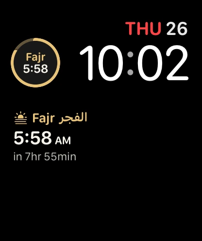
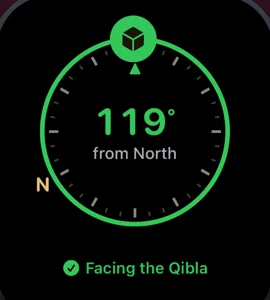

Make room for prayer
Prayer times, the adhan and the Qibla on iPhone and Apple Watch. Prayer times are calculated on your phone, so they work offline.


Mosques near you
Walking, driving and transit times, then directions in Apple Maps, Google Maps or Waze.
The next prayer, counting down
All five prayers and sunrise for today, and the time left until the next.
The Qibla in AR
Follow a path on the floor to the Kaaba, or use the compass.
Mosques near you
Walking, driving and transit times, then directions in Apple Maps, Google Maps or Waze.
The Qibla in AR
Follow a path on the floor to the Kaaba, or use the compass.
Average rating on the App Store
5.0
Great app
The athan is clear and beautiful, the prayer times are accurate, and the reminders arrive right when I need them. Everything is clean and intuitive, with no clutter or confusing menus.
Hiba B. · United States
Neat design, no ads
It’s nice to hear the Athan here in Mountain View, even if it’s from my phone. I really liked the map view of nearby mosques.
Mohammad M. · United States
Excellent app
Simple, user-friendly, and very helpful for keeping track of prayer times. Highly recommended.
Hamzah A. · United States
برنامج أكثر من رائع!
أول برنامج مجاني بدون إعلانات. خلفية مريحة جدا ومواقيت صلاة دقيقة.
نور الهدى · الولايات المتحدة
Called to every prayer
The adhan, on time
Choose the full adhan, a chime or silence for each prayer on its own.
Before the time runs out
A reminder 5 to 60 minutes before a prayer’s time ends, so a busy afternoon never takes Asr.
The countdown on your Lock Screen
A Live Activity counts down to the next prayer on the Lock Screen and in the Dynamic Island.
Thursday 26 November
7:30
 Isha العشاء
Isha العشاء
at 7:57 PM
27:12
Maghrib ends soon3m ago
30 min left in Maghrib time. Pray if you haven’t yet.
Maghrib prayer49m ago
It’s time for Maghrib prayer.
On your wrist
Today’s prayers, the Qibla compass and a countdown on your watch face, in complications and the Smart Stack.

Today’s prayers
All five and sunrise, with the next one marked.

On your watch face
The next prayer and a countdown, in complications.

The Qibla
A compass on your wrist, turning green when you face Makkah.
Everything around the five prayers
Prayer times offline
Prayer times and the Qibla are calculated on your phone. Once your location is saved, no signal is needed.
The times your mosque keeps
The calculation method for your country, Shafi or Hanafi Asr, and minute adjustments for each prayer.
The month on one page
A monthly timetable you can share or print as a one page PDF.
Sunnah days
Reminders for Jumu’ah, the White Days, Mondays and Thursdays, Arafah, Ashura and the last third of the night.
Widgets
Today’s prayers and the next one on your Home Screen and Lock Screen.
Siri and Shortcuts
Ask Siri when the next prayer is, or build it into a shortcut.
The Hijri date
Beside today’s date, and adjustable by a day or two to match your moon sighting.
In your language
13 languages, larger text, VoiceOver, and light and dark appearance.
Nidaa knows nothing about you
No account, no ads, no analytics. Nidaa collects nothing.
Read the privacy policyNidaa for iPhone and Apple Watch